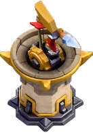
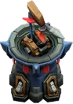
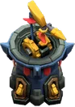

Multi-Gear Tower — Clash of Clans
Updated: 26 August 2026 · By the Goblins Farm team
The Multi-Gear Tower unlocks at Town Hall 17 with 350 damage per second, 12 tiles of range and coverage of both air and ground. Very few defences are strong on all three axes at once, which makes this one awkward to plan around.
- Levels
- 3
- Size
- 3x3
- Category
- Defense
- Damage per second
- 350
- Targets
- Ground and air
- Range
- 12 tiles
- Unlocked at
- Town Hall 17
- Most you can place
- 1
- Role
- Defence, air and ground
On this page
What the numbers say
350 damage per second, 12 tiles, air and ground, 3 levels. The point is that it has no obvious hole. Most defences give you an angle: they cannot hit air, or they cannot reach, or they only hurt one unit at a time. This one covers both movement types at long range for real damage.
Placing it
Central, overlapping with your other heavy defences. A building that answers both air and ground should be covering the compartments where you cannot predict which one is coming. Do not waste that flexibility on a corner where only one kind of attack ever arrives.
What we have not verified
Behaviour not yet verified in game. The figures above are read from the game files, so they are solid. The special behaviour of this building is not something the files state plainly, and we would rather leave a gap here than invent a mechanic. If you play at this level and can describe what it actually does, tell us and you will be credited.
How it looks at each level


Stats by level
| Level | Hitpoints | DPS or effect | Build cost | Build time | Town Hall |
|---|---|---|---|---|---|
| 1 | 4,000 | 350 DPS | 17,000,000 Gold | 8 d | 17 |
| 2 | 4,200 | 370 DPS | 18,000,000 Gold | 9 d | 17 |
| 3 | 4,350 | 390 DPS | 28,000,000 Gold | 14 d | 18 |
| Town Hall | Available |
|---|---|
| TH17 | 1 |
| TH18 | 1 |
Where these numbers come from. Read from Clash of Clans' own game files, client build 18.400.21. They are exact for that build and do not reflect anything released after it, so verify in game before committing an upgrade.
Game values are read from Supercell's own game files, reproduced as fan content under Supercell's Fan Content Policy. Goblins Farm is not affiliated with, endorsed, sponsored, or specifically approved by Supercell, and Supercell is not responsible for it.
Frequently asked
What does the Multi-Gear Tower target?
Both ground and air, at 12 tiles of range for 350 damage per second, from Town Hall 17. Covering both movement types at long range with real damage makes it unusually hard to plan around as an attacker.
Where should the Multi-Gear Tower go?
Centrally, overlapping your other heavy defences, since its value is answering whichever threat type arrives. Placing it where only one kind of attack ever comes wastes its flexibility.
Keep reading
Goblins Farm is not affiliated with, endorsed by, sponsored by, or specifically approved by Supercell. Clash of Clans is a trademark of Supercell Oy. This material is unofficial fan content produced under Supercell's Fan Content Policy. Game values change with every update; always verify in-game before committing an upgrade.